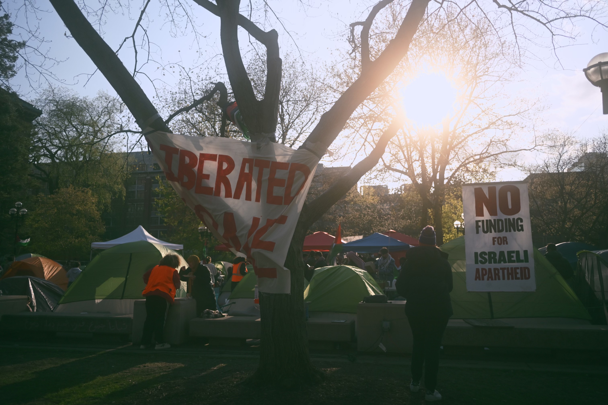

Publication Website
Mission Statement
The consensus among our generation is clear: we are tired of the mainstream discourse that stands for order over justice. Frontlines is an explicitly radical publication that answers this call for a media revolution. If our media does not represent us, then we will build our own instead. In doing so, we offer our pen as another tool in the fight for global liberation--a fight whose fronts extend all the way to Ann Arbor.
Why Frontlines?
"You want to be an intellectual? Then you must resist. Otherwise you and your education are useless" - Basil Al-Araj
Our schools love to profess the values of social justice and liberation. Yet, as students today rise up against genocide, we face hostility and repression from liberal administrators and their conservative donors. They want us to be armchair intellectuals, limited to talk without action. It's time we reclaim the space for critical thinking not as a box on a grading rubric, but as a launching pad for revolution.
We strive to embody the tradition of combative intellectuals like Basil Al-Araj. As the enemy wages war on all fronts with propaganda and repression, we must turn their offensive into a counteroffensive, opposing them in both the cultural sphere and on the streets. This publication seeks not only to be a foundation for this struggle on the cultural front, but to report on, and inspire the opening of struggle on many fronts.
This struggle, though, is already in motion. In the 30 days of the TAHRIR encampment--our Popular University for Gaza--we confronted the administration directly while engaging with our own community to build power.
The encampment made concepts and lessons, normally confined to University halls, democratic. Education was open to everyone. We came to understand the importance of building a community in which we could speak openly with all those who share a vision of a liberated world. This environment of shared knowledge gave birth to the idea for Frontlines.
However, the administration and police found our encampment--our community--unacceptable. U-M sent riot cops to pepper spray and beat us, but this has only sharpened our commitment. Frontlines is open to anyone who wants to contribute their pen to this fight, and we look forward to writing alongside you.
at the University of Michigan
Contact Us
Email: FrontlinesPub@protonmail.com